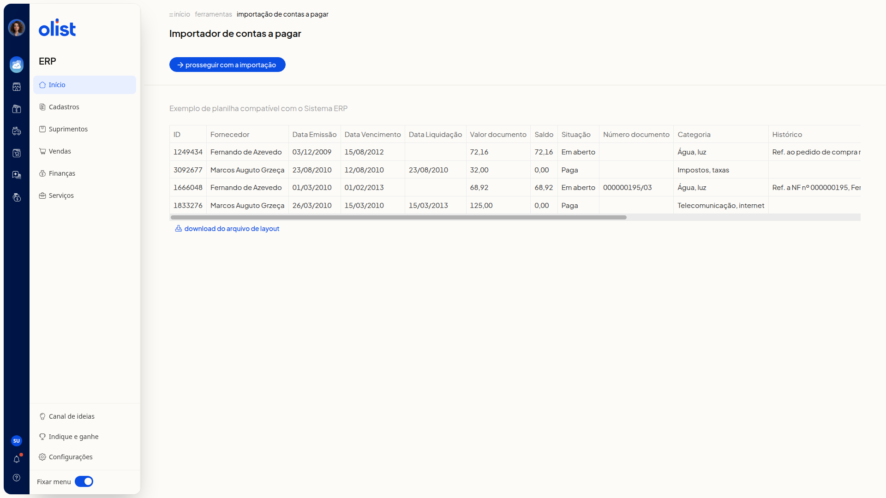

Como importar lançamentos de contas a pagar por planilha
Descrição
No ERP da Olist, você inclui lançamentos de contas a pagar importando uma planilha. O modelo desse arquivo é o layout disponível na tela do importador.
A importação fica em Finanças > Contas a pagar. Na lista, abra Mais ações.
Pré-requisitos
Tenha acesso à tela Contas a pagar no ERP.
Instruções
-
Acesse Finanças > Contas a pagar.
-
Clique em Mais ações.

-
Clique em Importar lançamentos de uma planilha.
-
Confira a tabela de exemplo na tela Importador de contas a pagar. As colunas são:
- ID
- Fornecedor
- Data Emissão
- Data Vencimento
- Data Liquidação
- Valor documento
- Saldo
- Situação
- Número documento
- Categoria
- Histórico

-
Clique em Download do arquivo de layout para obter o modelo.
-
Clique em Prosseguir com a importação para enviar o arquivo.
Links relacionados
Se precisar de ajuda, fale com o suporte.